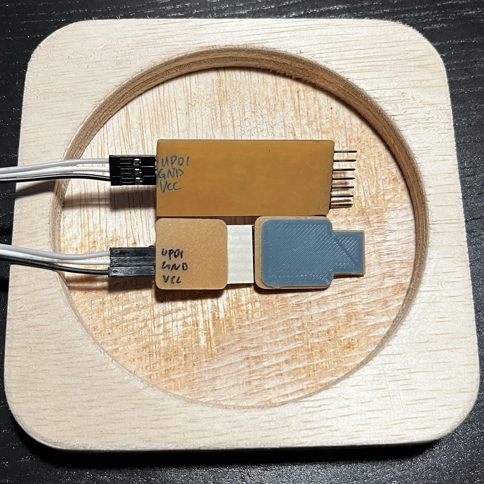
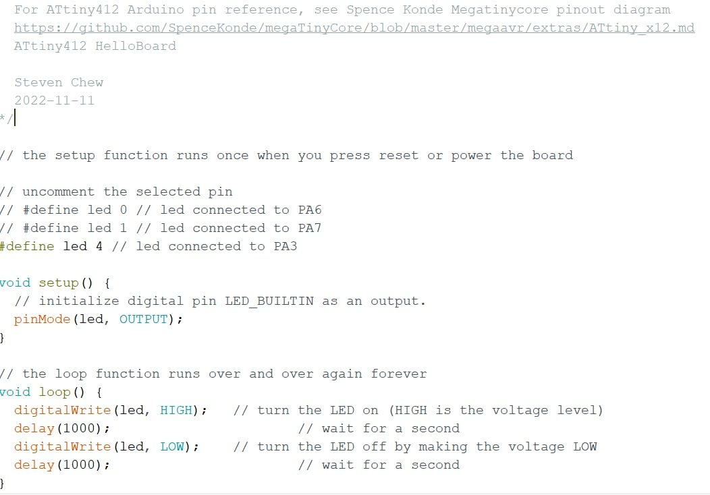
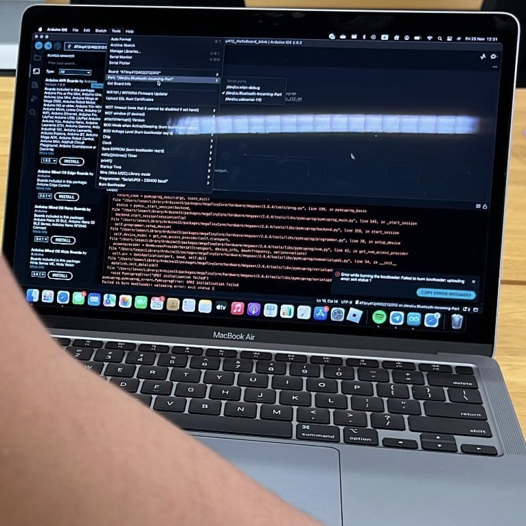
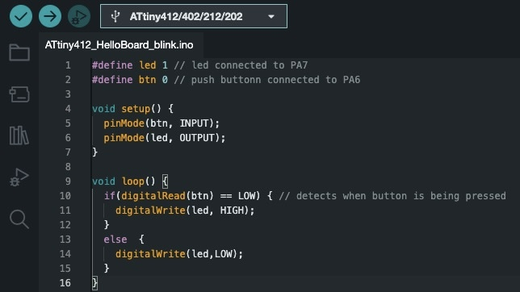

We will explore how to program the echo hello-world board here and continue where we left off in Electronics Design.
Before we can begin testing our board, we will need to download some additional boards manager.
Next, we will check and label our UPDI and echo hello-world board. This is to ensure we do not incorrectly connect the two boards together potentially damaging our board or even our computers.
Now we will burn a new bootloader for the board. All the settings will be done under the "Tools" tab.
Following the image below, we can now program our echo hello-world board LED to blink every other second. This will be our way of testing the board.
I had initially experienced a lot of issues getting my board to work and went through a lot of troubleshooting. This included hours of resoldering, multimeter testing and rereading schematics to ensure everything was correctly connected. However, at last with the help of my lecturer, he found out that the reason was simply that the version of Arduino I was using required me to use "Upload Using Programmer" instead of the standard "Upload".
After testing that our board works, the assignment calls for us to program our board to do something so we will write a simple programme that uses our button.
